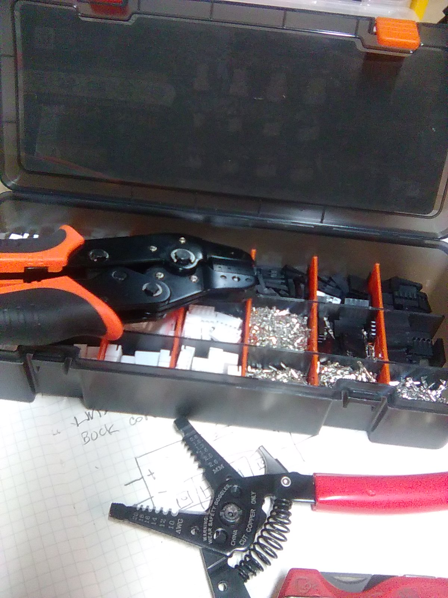

As this workshop has grown, I’ve relied on Copilot as a thinking partner and a second set of hands. Somewhere along the way, I got tired of referring to tools, systems, and subsystems by long descriptions — so I started giving them names.
I don’t name every tool in the shop. The drill press is just the drill press. But when there are two lasers, two CNC routers, or a system with multiple subsystems, names help keep the roles straight. They turn a pile of hardware into a constellation of collaborators I can think about clearly.
That’s how Amanda, Rae, Smokie, Brains, and Power came to be. Their names aren’t for whimsy—they’re for clarity. Each one marks a specific function in the workshop’s ecosystem.
Naming only happens when it reduces ambiguity or defines a role. It’s how I keep a growing workshop organized, maintainable, and expandable without losing the plot.
